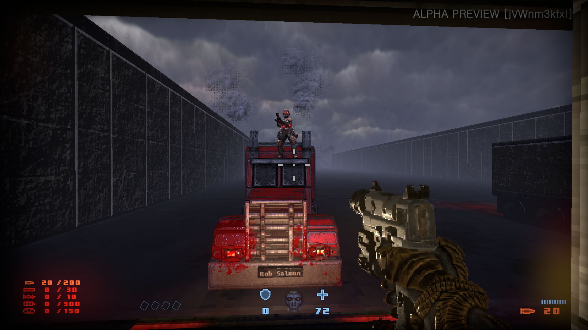
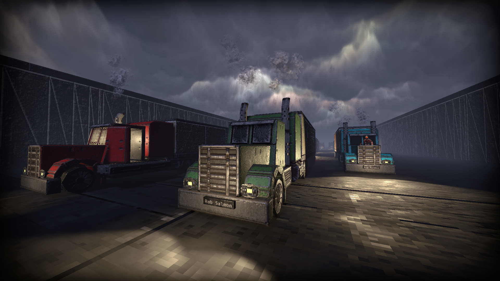
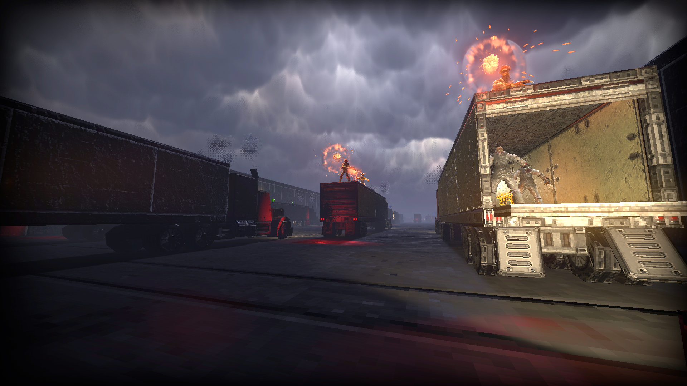
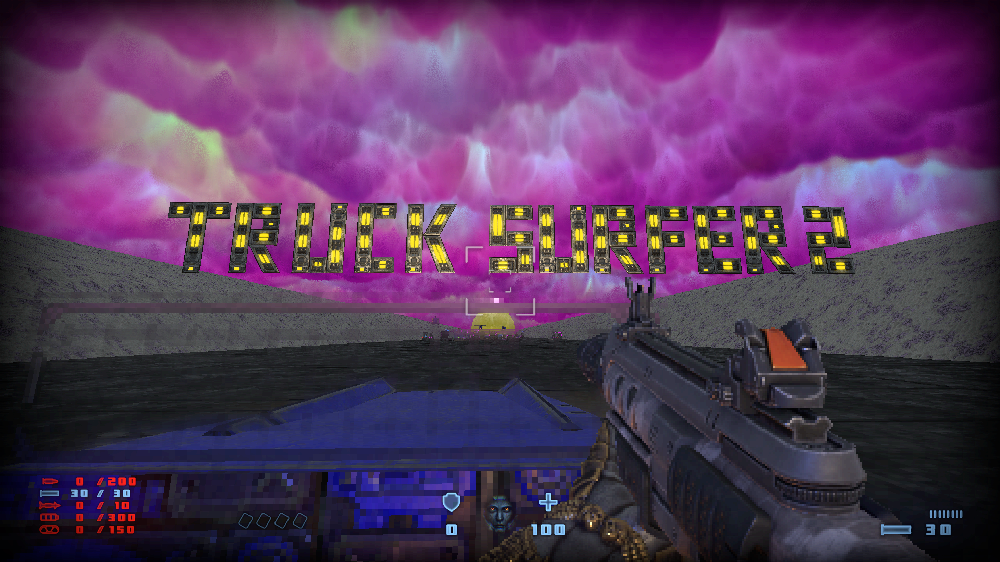

Prodeus is a game I contributed to on kickstarter. It's major selling point is the robust level editor that gives lots of options and tools to map makers. As a backer I was given early access to an alpha version of the game where I could talk to the developers directly about the game. This is my first foray into a 3d map making system and my early maps within it were sort of crap. However I have lots of plans to continue making things, as I feel the editor is a perfect tool for learning the basic tenets of 3D level design.
Truck Surfer was a goofy idea I had that takes advantage of the various mover and scroll tools available and it turned out to be a big hit with Prodeus' community. The goal is simple, jump across the trucks (that I 3D modeled myself) to the end. It sits as the 4th most popular map of all time, and earned me a shoutout by the lead developer when he showed off the game at a media event. I aim to release the 2nd installment before the game's full launch November 10th 2020.
   Pileup was meant to be simple level to bridge the first and second levels, featuring the player navagting through the wreckage on the highway caused in the first. Feature creep led the level to balloon into a level 3x time longer than the levels it's meant to connect.
Currently my next project is an attempt to make a 1 to 1 scale rendition of the City of Charlotte. Using Google Earth, various statistics found online and the measurements tools, I intended to recreate a ½ mile by ½ mile section of the city featuring the Nascar Hall of Fame, Panthers Stadium, Spectrum Center, and everything in between.

It is split across six different sections for optimization purposes. I have barely started on it, but you can see the blocked out shapes of the Spectrum Center and Charlotte Transportation Center here.